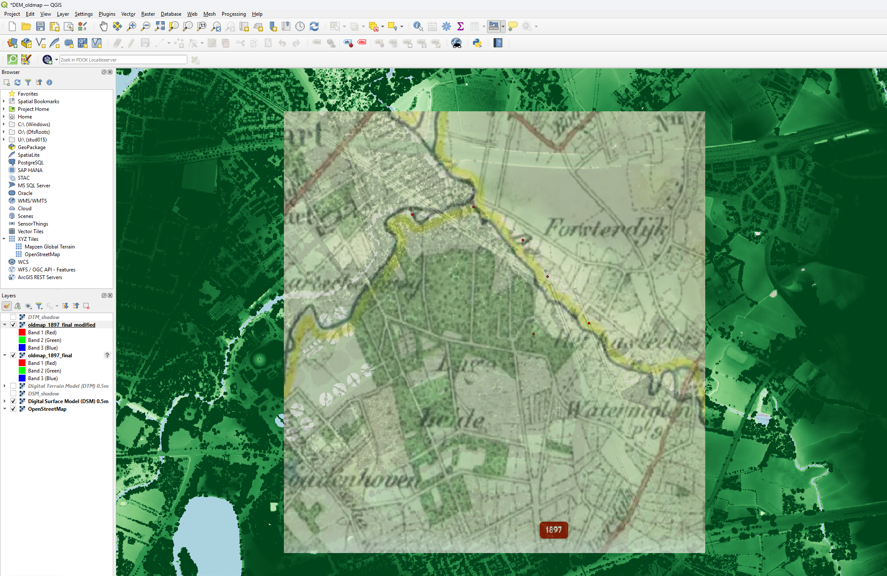

Digital Terrain Model (DTM)

For this project I selected a segment of the Dommel river branch called the Kleine Dommel, situated North-East of Eindhoven, Netherlands. I chose this area because it is outside of urban environments and therefore less monitored, providing an opportunity to track landscape evolution without heavy human interferences. Furthermore, it shows hints of elevation and has some distinct features, like water towers, that make it easy to locate on a map.
I downloaded the Digital Terrain Model (DTM) to isolate the bare ground surface elevation, stripping away infrastructures and vegetation covers. To represent the river layout, I applied the Mako color gradient, yeilding neutral blue and deep grey tones.
To enhance depth clarity and structural texture, I duplicated the DTM raster layer within QGIS, converted the copy into a Hillshade render type, and blended the layers using a Soft Light blending mode.
Digital Surface Model (DSM)

This next map displays the Digital Surface Model (DSM) which, unlike the DTM layer, registers vegetation and infrastructures.
I chose a green color gradient to signify the vegetated land neutrally. Just like the DTM map, I layered a duplicated Hillshade effect with a Soft Light blending mode to give the tall canopies and woodlands 3D volume.
Compared to the DTM map, it is more difficult to see the elevation of the land because the trees are a darker shade of green and make it less evident that the elevation is lower near the river.
Historical Military Map Comparison

To analyse the changes of this landscape in the last century, I imported an old map into QGIS from the OldMapsOnline database, using the georeferencing tool to align the old map with the modern data. I made the old map partly transparent to allow both maps to be viewed simultaneously.
Observations: From this comparison, we notice that although the river does have a very similar shape, it has moved significantly since 1897. Some of the curvatures have moved and the water tanks south of the forest are a modern addition, absent from the 1897 map. However, the forest just south of the river has stayed surprisingly similar over time.
Limitations
The measured altitude bounds (12m–17m) likely present an error as the Netherlands doesnotnormally reach the 15-meter threshold.